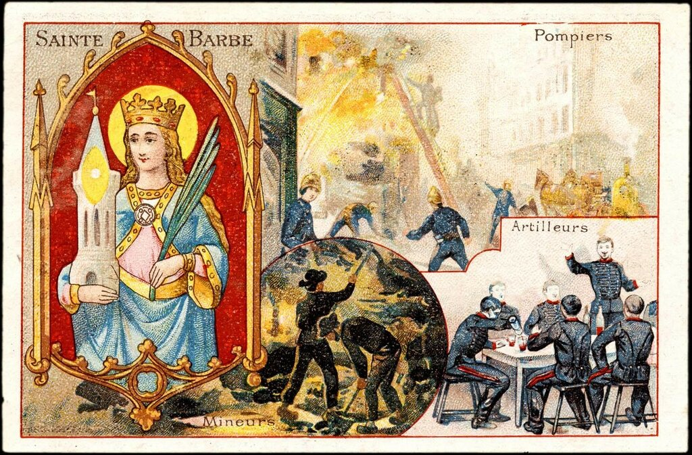
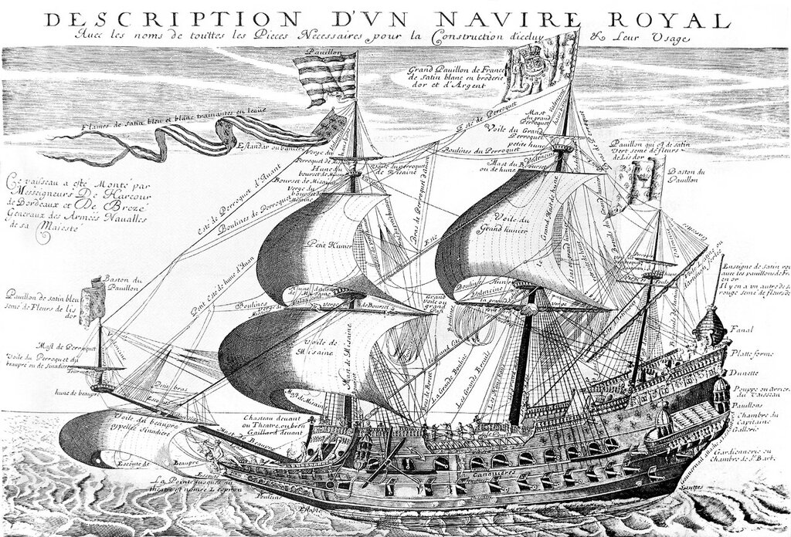
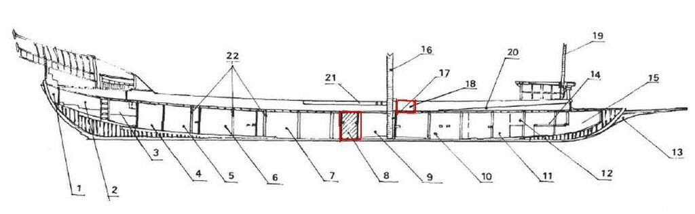

Под покровительством святой Варвары
…и змея в песочной лавке
жрёт винтовку, дом и плуг
и Варвара в камилавке
с топором летит вокруг.
Д. Хармс. «чтобы в пулю не смеяться...»
В предыдущих постах мы коснулись такого понятия, как gun-room, или констапельская, объекта, интуитивно понятного, однако не такого простого и однозначного, как может показаться. Поэтому задержимся немного, чтобы разобраться в нем поглубже.
Проблему можно лучше понять, если обратиться к французскому термину для обозначения констапельской каюты. В одном из первых наших морских словарей А.С.Шишкова (Треязычный Морской Словарь, 1795) читаем:
КОНСТАПЕЛЬСКАЯ. — Gun-rооm. — Sainte-barbе.
То, что по-английски это будет gun-room, мы уже знаем, а вот с французской святой Варварой (именно так переводится Sainte-barbе) встречаемся впервые. Известно, что во многих армиях христианского мира св.Варвара является покровительницей пожарных, саперов и артиллеристов, а в последнее время, как у нас, например, – еще и ракетчиков.

Французская поздравительная открытка с изображением св. Варвары.
Прежде чем стать святой Варварой, констапельская у французов называлась la Gardiennerie, что приблизительно можно перевести на русский как «караульное помещение», «помещение для охранников». И как всякая караулка, оно было основательно защищено от проникновения извне. Некоторые исследователи полагают, что именно эта особенность констапельской привела к появлению другого ее названия.
Известный французский генерал Frédéric Chapel (1849-1932) в изысканиях по этимологии военных терминов французского языка предложил свой вариант происхождения термина sainte-barbе для названия помещения для артиллеристов на корабле. В глубокой истории, когда вокруг фортификационных сооружений на суше возводили внешнее ограждение, взрывоопасные вещества нередко хранили в зоне между таким ограждением и основными стенами, дабы обезопасить защитников крепости от уничтожения при возможном их взрыве. Эта территория называлась cincta barbara, «внешняя зона». А отсюда уже народ, являющийся, как известно, творцом языка, превратил этот термин в «Святую Варвару» (« sainte barbe »). Мы не можем ни подтвердить, ни опровергнуть эту гипотезу французского генерала, приводим ее как исторический анекдот.
Нас больше будет интересовать другая сторона этой проблемы. В исторической и справочной литературе, посвященной французскому военному флоту, в процессе эволюции корабля стали переносить название sainte-barbe с помещения, где размещался старший артиллерийский чин и хранились некоторые инструменты и принадлежности канониров (констапельская) на помещение для хранения пороха и боеприпасов (крюйт-камера). Специалисты обычно не смешивали эти два понятия, в том числе и специалисты французского флота. Для крюйт-камеры применялось вполне адекватное название soute aux poudres (пороховой погреб) или chambre des poudres (пороховой отсек). Однако в общеобразовательной и популярной литературе и к констапельской, и к крюйт-камере продолжали применять имя sainte-barbe. Исторически мы можем отнести начало этого процесса к середине XVII века. Жорж Фурнье, известный французский математик, а по совместительству – капеллан на флагманском корабле флота Франции la Couronne, в своем самом известном трактате l’Hydrographie (1643) впервые дал письменное определение термина sainte-barbe, которое соответствует нашему термину констапельская.
« Sur la soute (: d'un vaisseau) est la gardiennerie ou chambre des canonniers, appellée pour cét effet des Marseillois chambre de sainte Barbe, patronne des canonniers; là se garde[nt] les gargouches et armes du vaisseau »
Над трюмом (корабля) находится констапельская или каюта артиллеристов, названная марсельцами по этой причине каютой св. Варвары, покровительницы артиллеристов; здесь хранятся картуши и оружие корабля»
Это помещение помечено и на рисунке корабля la Couronne, который был помещен на фронтисписе «Гидрографии»

Корабль la Couronne. Помещение констапельской обозначено надписью Gardiennerie ou Chambre de Ste. Barbe в правой нижней части изображения.
Но уже в 1697 году Баррас де Лапен, специалист по галерам, пишет: «sainte barbe ou chambre des poudres» – «св. Варвара или пороховой отсек», что запутывает терминологию. Возможно, это связано с тем, что на галерах было, как правило, две крюйт-камеры: так называемая малая (petite sainte-barbe), или куршейная и большая, которую называли просто sainte-barbe.

Продольный разрез галеры. Крюйт-камера (sainte-barbe) обозначена №8, малая (petite sainte-barbe) - №18. (по Баррасу де Лапену)
Мы можем отметить, что малая, или куршейная крюйт-камера находится как раз в том месте галеры, где производилось перезаряжание куршейной пушки после выстрела. Мы подробно описали этот процесс ранее.
Учитывая, что заняты мы сейчас кораблестроением в Генуе, ограничимся пока этим кратким обзором констапельской и крюйт-камеры на парусных кораблях и галерах, оставив более подробное их описание для дальнейших постов.